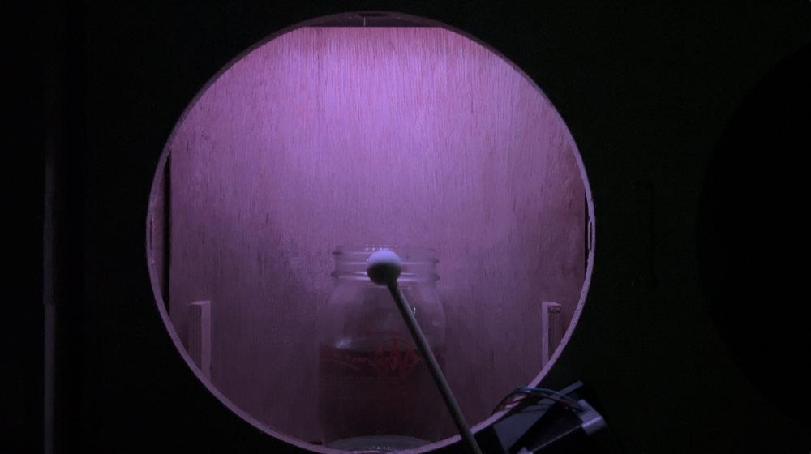
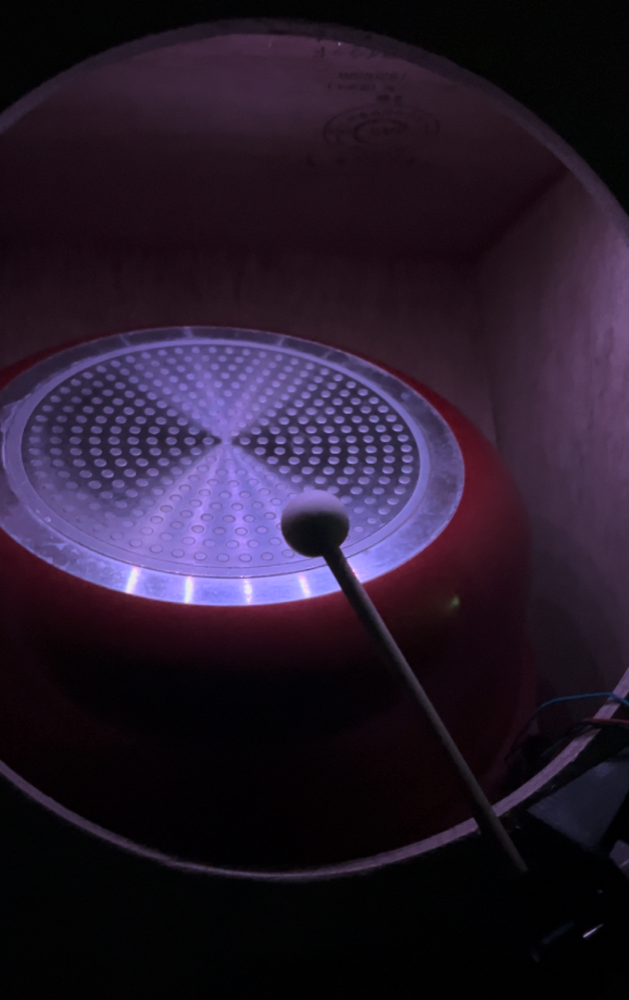

Robotic Drum Machine
Technology
- M5stickC
- Processing
- osc通信
- CNC
- ワークショップ
明星大学内で行われたデザイン学部と情報学部共同で行なったワークショップで作成した作品
”参加者でアルゴリズムを決定し、ルールのもとで演奏する”というテーマのもと、"振り子の最も速度が速い時に対応したマレットが叩く"というアルゴリズムでマレットの動きを制御している。「プログラムでシミュレーションをした振り子の動き」と「アクチュエータの動き」２つの視覚情報を提示している。
CNCにより板を加工し外装を作成した。棚に日常に溶け込んでいる物をいれ、マレットで叩くことで演奏を行う。マレットをアルゴリズムで制御することでリズムを生み音楽を奏でている。

